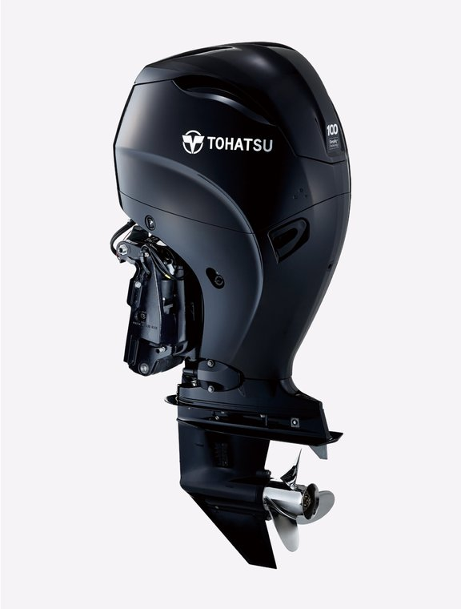

| 发动机形式 | 直列 4 缸 · SOHC-4V |
|---|---|
| 最大输出 | 100 ps（73.6 kW） |
| 排量 | 1995 cc |
| 缸径 × 行程 | 84 × 90 mm |
| 最高转速范围 | 5,150 – 5,850 rpm |
| 启动方式 | 电启动 |
| 操控方式 | 遥控 / 多功能舵柄 |
| 换挡 | 前进 - 空挡 - 后退 |
| 齿轮比 | 2.08 : 1 |
| 点火系统 | 微电脑程控点火 |
| 轴距 | 20″ / 25″ |
| 燃油 | 无铅汽油（87 号及以上） |
| 机油 | NMMA 认证 FC-W 四冲程机油 |
| 机油容量 | 4.2 L（含滤芯） |
| 整机重量 | 178 kg |
| 发电量 | 12V / 492W / 41A（电启动机型标配） |
| 可变怠速 | 650–850rpm（5 档可调） · 标配 |
| 标准配置 | EFI 电喷 / 挂挡保护 / 恒温冷却 / 螺旋桨排气 / 过热报警 / 油压报警 / 电动液压倾斜(PTT) |
* 以上规格参数参考 TOHATSU 国际版官方资料整理,实际销售型号配置、轴距、颜色等可能存在差异,具体请以实物及销售确认为准。规格如有变更,恕不另行通知。